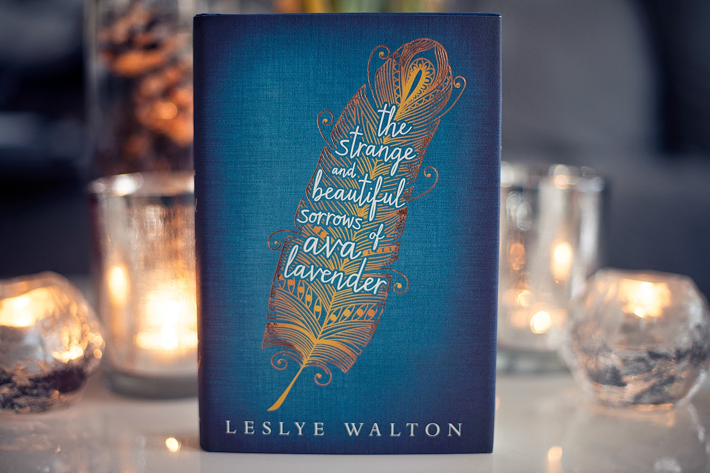
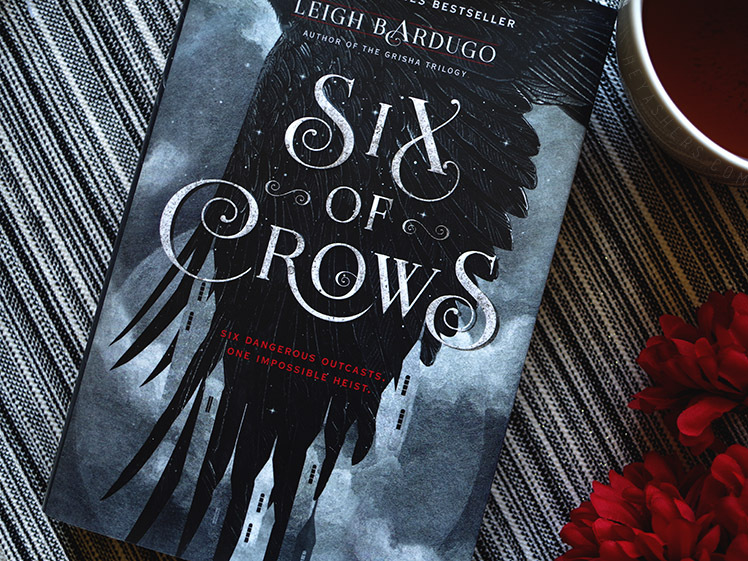
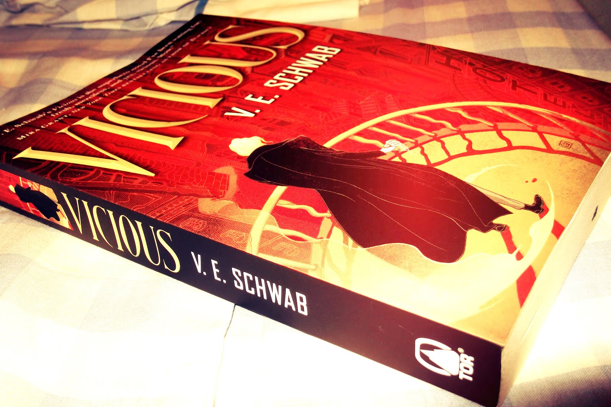

Book Reviews
The Strange and Beautiful Sorrows of Ava Lavender
"To many I was myth incarnate, the embodiment of a most superb legend, a fairy tale. Some considered me a monster, a mutation. To my great misfortune, I was once mistaken for an angel. To my mother, I was everything. To my father, nothing at all. To my grandmother, I was a daily reminder of loves long lost. But I knew the truth--deep down, I always did.
I was just a girl."
The Strange and Beautiful Sorrows of Ava Lavender is a generational tale about loves long lost and the scars love's victims carry. This book reminded me of traditional fairy tales in their purest form. The story drips with death, loss, and heartache: people cutting out their own hearts, turning into birds, or disappearing into ash. People suffering endlessly because of impossible loves.
And in the midst of all this, a girl is born with wings
This book is violent and dark and features intercourse both consensual and not, there is murder and suicide, ghosts and untouched harpsichords, and there is pain. But the pain and sorrow and darkness is also beautiful and lyrical and magical. It is Walton's delicate language that lifts the story out of its own despair and makes it completely transcend the gloom. It is like watching something beautiful burn, and you have to acknowledge that flames are also beautiful in their own way, even as they destroy.
Tiny examples of such:
"Her mother's scent was that of fresh baked bread, tainted by a slightly brackish tone, as if the bread had been salted with her tears."
"Emilienne silently promised that she'd be good to her husband, as long as he didn't
ask for her heart.
She no longer had one to give."
"Just remember, meu inima, my heart," she would say, "royal blood flows through our veins and from our wounds"
The Strange and Beautiful Sorrows of Ava Lavender is beautifully written, magical, and sorrowful. I would rate this book a 4.5 out of 5 stars. This book is a must-read.
Six of Crows by Leigh Bardugo

"No mourners, no funerals. Among them, it passed for 'good luck.'"
Leigh Bardugo is a genius when it comes to creating new worlds and characters that seem complex, real, and intriguing. This book is non-stop action from the beginning to end. There was not a moment I felt bored while reading it and I had trouble putting it down so I could go to sleep. In the hands of a less-skilled author, this could have been a mess, but Bardugo gives just the right amount of attention to each of her characters, allowing them to be extremely badass, wicked sometimes, and unlikeable in that multi-layered way that makes them completely likable.
These characters are convicts, thieves, and runaways. They are misfits in every sense of the word. The gangs compete for power in their town. Barudgo intertwines these real world situations with magic and the supernatural.
Some quotes I enjoyed are:
"No one else moved like that, as if the world were smoke and she was just passing through it."
"Many boys will bring you flowers. But someday you'll meet a boy who will learn your favorite flower, your favorite song, your favorite sweet. And even if he is too poor to give you any of them, it won't matter because he will have taken the time to know you as no one else does. Only that boy earns your heart."
"We are all someone's monster."
I gave Six of Crows a 4 out of 5 stars. If you're looking to fall in love with a ragtag bunch of misfits who go on adventures and commit crime together, this is the book for you.
Vicious by V.E. Schwab

Vicious is a tale of two sociopaths. One just ever so slightly more lovable than the other. This is the story of Victor and Eli. Two college roommates, and best friends, until an experiment goes horribly wrong. Eli believes has a theory on how to create ExtraOrdinary people. Both Victor and Eli decide they want to become superheroes so they test the theory on themselves. Unfortunately, Victor's transformation doesn't go quite as smoothly as Eli's.
This leads to a catastrophic series of events that makes them hate each other. And ten years later, Victor will stop at nothing to kill Eli.
Victoria Schwab's characters feel real and complex, never reduced to simple archetypes. Vicious is dark, intricate, and daring. It makes you wonder if there is truly such things as villain and heroes, or if it is all just based on perspective. Schwab twists back and forth through time and morality and life and death.
Here are some of my favorite quotes:
"But these words people threw around - humans, monsters, heroes, villains - to Victor it was all just a matter of semantics. Someone could call themselves a hero and still walk around killing dozens. Someone else could be labeled a villain for trying to stop them. Plenty of humans were monstrous, and plenty of monsters knew how to play at being human"
"The absence of pain led to an absence of fear, and the absence of fear led to a disregard for consequences."
"You must make time for that which matters, for that which defines you: your passion, your progress, your pen. Take it up, and write your own story."
I would give this book a 4.5 out of 5 stars.
Follow Me:


Review of the Week
4.5 out of 5 stars
The Strange and Beautiful Sorrows of Ava Lavender by Leslye Walton